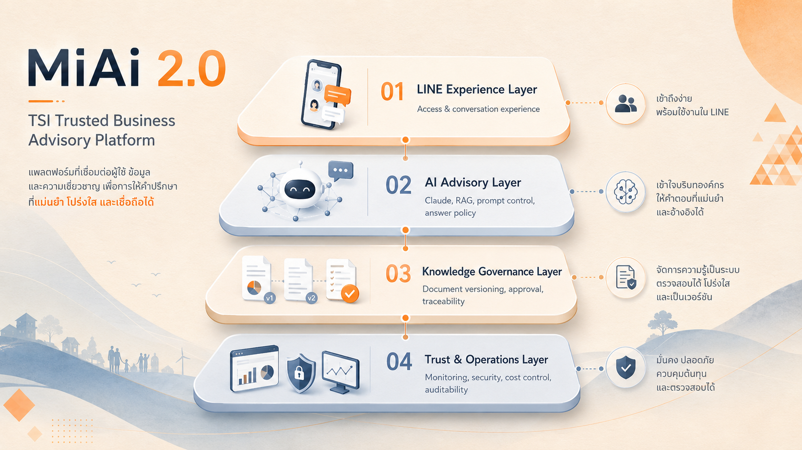

Pitch Concept
MiAi 2.0
TSI Trusted Business Advisory Platform — จาก Web Chat สู่ LINE AI Advisor ที่ เข้าถึงง่าย เชื่อถือได้ และตรวจสอบได้
LINE Experience
Access & conversation experience
AI Advisory
Claude, RAG, prompt control, answer policy
Knowledge Governance
Version, approval, traceability
Trust & Operations
Monitoring, security, cost, auditability

MiAi 2.0 platform diagram แสดง 4 ชั้นของระบบตั้งแต่ประสบการณ์บน LINE ถึง governance และ operations
From Content Website to Connected Business Advisory Ecosystem
MiAi 2.0 เปลี่ยนบทบาทจากเว็บไซต์ที่ให้ผู้ใช้ค้นหาเนื้อหาเอง ไปสู่ flow ที่ช่วยเข้าใจปัญหา แนะนำความรู้ และเชื่อมผู้ประกอบการเข้าสู่บริการของ TSI อย่างต่อเนื่อง
Today
MiAi 2.0
Business Value
ขยายบทบาท TSI จากโครงการให้คำปรึกษา ไปสู่ Digital Business Improvement Platform

MiAi 2.0 ecosystem visual แสดงการเชื่อมต่อจาก content, advisory flow, case matching และบริการต่อเนื่องของ TSI
Use Cases Prototype in Webview
สไลด์นี้เหมาะเป็น bridge จาก ecosystem concept ไปสู่ภาพการใช้งานจริง โดยฝัง [tsi_4layer_paper_prototype_usecases.html](/Users/tf-68/Documents/miai_tsi/tsi_4layer_paper_prototype_usecases.html) แบบ webview ให้ดู flow และ use cases ได้ทันที
งบลงทุนนี้ซื้อทั้งการส่งมอบระบบ และความพร้อมในการใช้งานจริง
Scope ถูกจัดเป็น 3 phase เพื่อเชื่อมให้เห็นชัดว่าแต่ละส่วนของงบใช้สร้างอะไร และผลลัพธ์ใดที่ TSI จะได้รับก่อน go-live
- Existing MiAi review
- Knowledge audit
- Final architecture
- Evaluation criteria
- LINE OA
- Claude + RAG
- Guardrails
- Dashboard and logging
- Functional and AI evaluation
- Security and load test
- UAT
- Deployment and handover
Project investment is separated from recurring usage cost.
Recurring Cost — Estimated
รายการใช้งานรายเดือนควรประเมินแยกจาก development cost เพราะ usage จริงจะชัดขึ้นหลังเปิดใช้งาน
- Claude API
- LINE Messaging API
- Cloud Infrastructure
- Vector Database / Monitoring
- Maintenance and Support
Third-party usage cost ไม่ควรถูกรวมไว้ใน development cost หาก volume การใช้งานยังไม่ชัด
Appendix Zone
รายละเอียดต่อไปนี้ใช้สำหรับตอบคำถามเชิงลึกหลังจบ pitch หลัก โดยเน้น logic ของ MiAi 2.0 ในฐานะ advisory system ไม่ใช่แค่ chatbot
From AI Q&A to Business Diagnosis
Use “รู้ เห็น เป็น ใจ” as the advisory conversation framework
Link answers to real cases and the next best action
- Next Best Action ระดับเบา: อ่านบทความ ดูวิดีโอ รับ checklist ทดลอง improvement mission
- ระดับกลาง: จองเยี่ยมชมศูนย์เรียนรู้ สมัคร workshop เข้าร่วมกิจกรรมออนไลน์ ขอคำปรึกษาเพิ่มเติม
- ระดับสูง: สมัครโครงการ TSI ส่งข้อมูลคัดกรอง นัดเจ้าหน้าที่ หรือ human advisor handoff